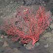
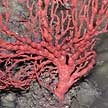
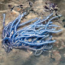
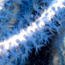

|
|
|
|
|
|
| 15-20cm.
Colony is a cluster of strems. Stems cylindrical, unbranched except
near the base, covered with bumps, large white polyps emerge from
tips of bumps. Red, white, yellow or orange. On coral rubble. Sometimes seen on our Northern shores. |
15-20cm.
Colony with long unbranched thin cylindrical stems emerging vertically
from a horizontal stem. Red or brown. On coral rubble. Sometimes seen
on our Northern shores. |
10-15cm.
Colony few branching stems on one plane, cylindrical stems with large
pink polyps. On coral rubble. Commonly seen on our Northern shores. |
10-15cm.
Colony with sparse branches, that emerge in a U-shape. Cylindrical
stems with large white polyps all around. Orange. On coral rubble,
rocks. Commonly seen on our Northern shores. |
15-20cm.
Colony with long branches, tangled in large colonies. Cylindrical
stems white or pale with large yellow or pale orange polyps all around. On coral rubble,
rocks. Sometimes seen on our Northern shores. |
|
|
|


Tree sea fan
Family Melithaeidae |
|


Blue sea fan
awaiting identification |
| 10-20cm.
Colony randomly branched, on one plane. Stems flattened with groove
along the centre, large white polyps at sides of stem, not in groove.
Brown, orange, red. On coral rubble. Sometimes seen on our Northern
shores. |
10-20cm.
Colony with branches on one plane that resemble veins of a leaf, or
long tangled stems. Relatively large white polyps on opposite edges
of the flattened, skinny stems. Red, maroon, orange, yellow. On coral
rubble, rocks, in sand. Commonly seen on our Northern shores. |
10-15cm.
Colony with branches on one plane that resembles the silhouette of
a large tree. With swollen nodes where stems branch. Polyps all around
the stem. Red, pink or white. On coral rubble, rocks, in sand. Sometimes
seen on our Northern shores. |
10-15cm.
Colony with regular branches that form a maze-like pattern. Fat cylindrical
stems. Orange, pink, yellow or white. On coral rubble. Sometimes seen
on our Nothern shores. |
15-20cm.
Colony with long branches. Cylindrical
stems white or pink with large blue polyps all around. On coral rubble,
rocks. Sometimes seen on our Northern shores. |
|
|
|
|
|
| 20-30cm.
Colony bushy, long stems not frequently branched. Cylindrical, thick
(1cm) fleshy and leathery, with a wire-like central support sometimes
exposed at the tips. Dusky pinkish beige. On coral reefs. Seen
on our Southern shores. |
20-30cm.
Cylindrical stem unbranched, small white or transparent polyps. White
or yellow. On coral rubble. Sometimes seen on our Northern
shores. |
|
|
|
|
Not
a sea fan
|
|
|
|
|
|
|
|
|
|
|
|
5-8cm long with large polyps (1cm) in capsules along the side branches.
White, beige, orange. On boulders, jetties. Commonly seen on our Northern shores. |
|
|
|
|